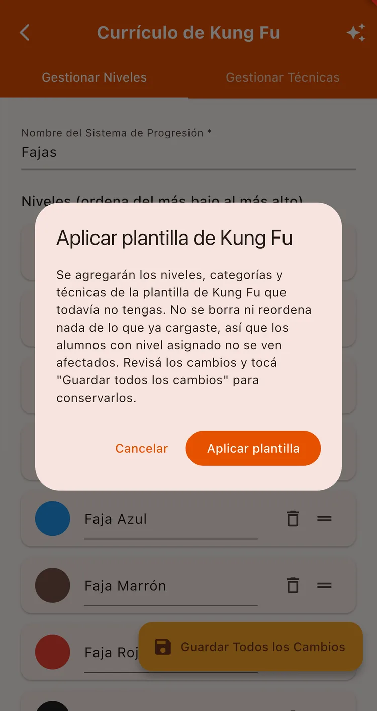
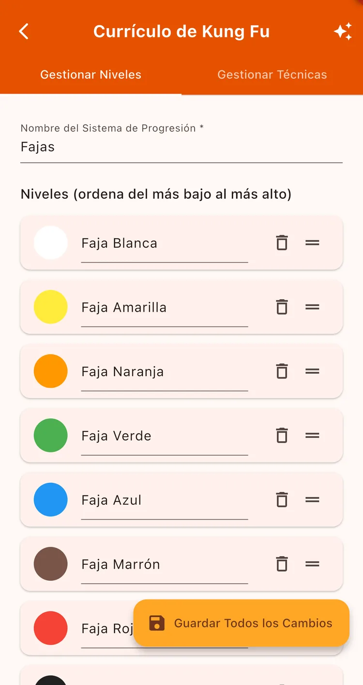
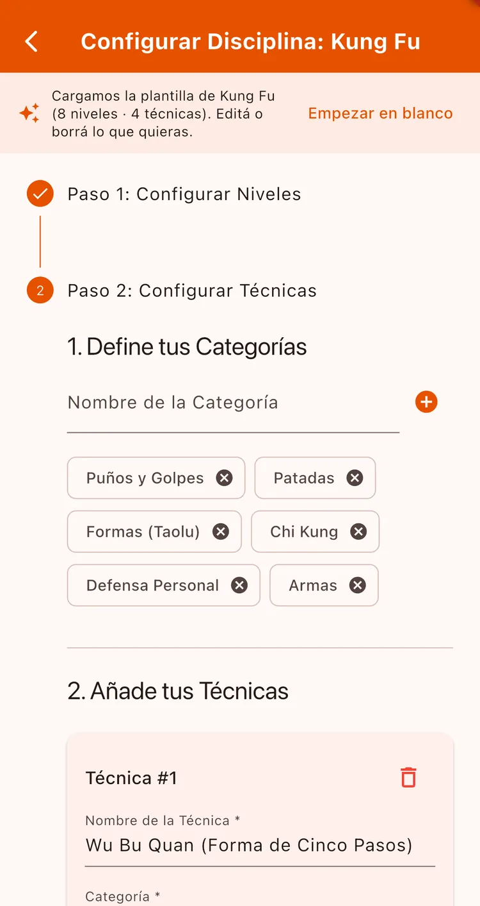
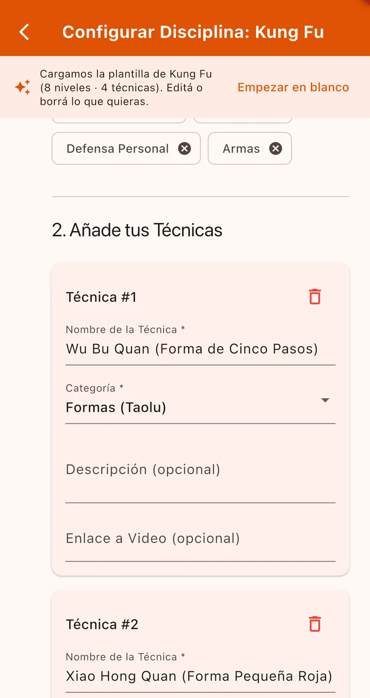

¿Para qué sirve?
La currícula es el camino que van a recorrer tus alumnos: qué cinturones existen y qué técnicas corresponden a cada etapa. Una vez cargada, cada alumno ve su progreso y sabe qué le falta para el próximo nivel — que es lo que más los engancha.
Antes de empezar
- Tener al menos una disciplina creada en tu escuela.
Paso a paso
Abrí el currículo
Andá a Gestión → Gestionar Currículo. Si tenés una sola disciplina, entra directo; si tenés varias, elegí cuál querés configurar.

Aplicá una plantilla (el atajo)
Arriba a la derecha, el ícono de destellos ✨ aplica la plantilla de tu arte marcial: trae los cinturones, las categorías y las técnicas ya armados.
Es seguro usarlo aunque ya tengas cosas cargadas: sólo agrega lo que te falta, no borra ni reordena lo tuyo, y los alumnos con nivel asignado no se ven afectados.
Hay plantillas de Karate, Taekwondo, Jiu Jitsu, Judo, Kung Fu, Tai Chi, Aikido, Capoeira, Kendo, Krav Maga, Boxeo, Kickboxing, Muay Thai y MMA.

Ajustá los niveles
En la pestaña Gestionar Niveles ponés el Nombre del Sistema de Progresión (por ejemplo «Cinturones» o «Fajas») y editás la lista.
Podés arrastrar cada nivel para reordenarlo, cambiarle el nombre y elegirle un color. Con Añadir Nivel agregás los que falten.

Creá las categorías de técnicas
Pasá a Gestionar Técnicas. Primero definís las categorías: por ejemplo «Patadas», «Formas», «Defensa personal». Escribí el Nombre de la Categoría y tocá +.

Cargá las técnicas
Ahora sí agregá cada técnica con su Nombre de la Técnica, la categoría a la que pertenece y, si querés, una descripción y un link de video.
Al terminar tocá Guardar Todos los Cambios.

No vas a poder cargar una técnica si todavía no creaste ninguna categoría. Es el orden que pide la app.
Aplicar la plantilla y después ajustar es mucho más rápido que cargar todo a mano. Podés borrar lo que no uses y agregar lo tuyo.